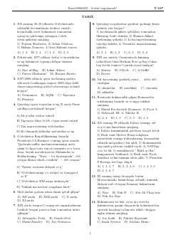

TDTarix fanidan DTM testlariga tayyorgarlik ko'rish uchun diagnostik qo'llanma.
Ushbu qo'llanma tarix fanidan DTM test sinovlariga tayyorlanayotgan abituriyentlar uchun diagnostik test materiallarini o'z ichiga oladi. Kitobda jahon tarixi va O'zbekiston tarixi bo'yicha turli murakkablikdagi savollar va test topshiriqlari berilgan. Nashr bilim darajasini sinash va imtihonga tayyorgarlik ko'rish uchun mo'ljallangan.